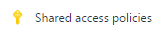
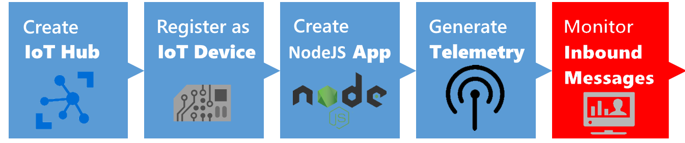

This is an example integration between a NodeJs app and Azure IoT Hub. This integration shows features like creating devices in the Azure IoT Hub device registry as well as sending telemetry to the IoT Hub.
Note: In this workshop, we will create uniquely named Azure resources. The suggested names could be reserved already. Just try another unique name.
Note: The IoT Hub also offers the ability to send commands back to devices. This is not part of this workshop.
A Windows 7+ or Linux or Mac computer with internet access
Some text editor like Visual Code
Node.js installed. (We prefer Version 6)
Azure account create here (Azure passes will be present for those who have no Azure account (please check your email for final confirmation))
IoT Hub Explorer (for Command-Line interface based usage; see below for installation steps)
At the end of this part of the workshop, the following steps are performed
Creating an IoT Hub in the Azure Portal
Creating a new NodeJs app
Generate and send dummy telemetry
Monitoring the arrival of the telemetry in Azure
Conclusion

Follow these steps to create an Azure IoT Hub.
Log into the Azure portal. You will be asked to provide Azure credentials if needed
On the left, a number of common Azure services are shown. Select More Services to open a list with all available services

Filter it with IoT Hub

Select IoT Hub and a new blade will be shown. Select Add and you will be asked to enter the information needed to create an IoT Hub

Enter a unique IoT Hub name eg. IoTWorkshop-ih. A green sign will be shown if the name is unique
Enter a unique Resource Group eg. IoTWorkshop-rg. A green sign will be shown if the name is unique
Select West Europe for the location, if needed

Press Create and the portal will start creating the service. Once it is created, a notification is shown. In the right upper corner, a bell represents the list of all notifications shown

Creating an IoT Hub takes some time. Meanwhile, we will start with the app which will connect to the IoT Hub later on.

All devices that use an IoT hub must be individually registered, and use their own 'endpoint' and shared access key to access the hub. So we have full control over all connected devices and the telemetry coming in. In this exercise, you will register a client device.
To register a client device, you must run a script that uses a connection with sufficient permissions to access the hub registry. In this case, you will use the built-in iothubowner shared access policy to accomplish this.
Check the Azure portal. The resource group and the IoT Hub should be created by now (otherwise, we were unable to send duty cycles information to it)

On the left, select Resource groups. A list of resource groups is shown

Select the resource group IoTWorkshop-rg. It will open a new blade with all resources in this group
Select the IoT Hub IoTWorkshop-ih. It will open a new blade with the IoT Hub

The IoTHub has not received any messages yet. Check the general settings for Shared access policies

Navigate to the 'iothubowner' policy and write down this Connection String-Primary Key

These is the secret from the IoT Hub, needed to connect our NodeJs client and monitor it later on
Note: For more information about access control for IoT hubs, see Access control in the "Azure IoT Hub developer guide."
Each device that sends data to the IoT hub must be registered with a unique identity.
Create a new "createdeviceid" folder on your system using a File explorer
Open a Node.JS console or dosbox and navigate to the createdeviceid folder using the command prompt
Enter the following command, and press RETURN to accept all the default options. This creates a package.json file for your application:
javascript
npm init
Enter the following command to install the Azure IoT Hub package:
javascript
npm install azure-iothub
Create a createdeviceid.js file in the createdeviceid folder.
Use a text editor to edit the "createdeviceid.js" file.
Modify the file with the following script and set the connStr variable to reflect the shared access policy connection string for your IoT Hub, as shown here:
```javascript
'use strict';
var iothub = require('azure-iothub');
var connStr = '
registry.create(device, function(err, deviceInfo, res) { if (err) { registry.get(device.deviceId, printDeviceInfo); } if (deviceInfo) { printDeviceInfo(err, deviceInfo, res) } });
function printDeviceInfo(err, deviceInfo, res) { if (deviceInfo) { console.log('Device id: ' + deviceInfo.deviceId); } } ```
Save the script and close the file
In the Node.JS console window, enter the following command to run the script:
javascript
node createdeviceid.js
Do not expect a lot output. Only the text "Device id: MachineCyclesNodeJs" will be shown
Let's Verify that the script registers a device with the ID MachineCyclesNodeJs. Open the browser to your Azure portal
In the Azure portal, on the blade for your IoT Hub, click the Device Explorer tab
A list of all registered devices of this IoTHub is shown. Verify that "MachineCyclesNodeJs" is listed
Click "MachineCyclesNodeJs" and view the device-specific keys and connection strings that have been generated
Remember the connection string-primary key for "MachineCyclesNodeJs" (copy to the clipboard). You will use this in the next exercise
We have created a registration for a device simulation. Now let's build the actual device simulation.

Now that you have registered a client device, you can create an application that the device can use to submit data to the IoT Hub.
Now that you have registered a device, it can submit data to the IoT hub.
Create a new "iotdevice" folder on your system, next to the folder in the previous excercise
Open the Node.JS console or dosbox and navigate to the iotdevice folder
Enter the following command, and press RETURN to accept all the default options. This creates a package.json file for your application:
javascript
npm init
Enter the following command to install the Azure IoT device and AMQP protocol packages:
javascript
npm install azure-iot-device azure-iot-device-amqp
Create an iotdevice.js file in the iotdevice folder
Use a text editor to edit the "iotdevice.js" file
Modify the JavaScript file with the following script and set the connStr variable to reflect the device connection string for the MachineCyclesNodeJs device (which you copied to the clipboard in the previous exercise), as shown here:
```javascript 'use strict';
var clientFromConnectionString = require('azure-iot-device-amqp').clientFromConnectionString;
var Message = require('azure-iot-device').Message;
var connStr = '
function printResultFor(op) { return function printResult(err, res) { if (err) console.log(op + ' error: ' + err.toString()); if (res) console.log(op + ' status: ' + res.constructor.name); }; }
var i = 1; var e = 0; var repaired = false;
var connectCallback = function (err) { if (err) { console.log('Could not connect to IoT Hub: ' + err); } else { console.log('Client connected to IoT Hub');
client.on('message', function (msg) {
client.complete(msg, printResultFor('completed'));
if ( msg.data[0] >= 42) {
console.log("\x1b[33m",'Repair command received. Machine started running again');
console.log("\x1b[0m", '------------------------------------------------------');
e = 0;
repaired = true;
}
});
// Create a message and send it to the IoT Hub every second
setInterval(function(){
if (i % 5 == 0 && !repaired ) {
e = 99;
}
repaired = false;
var data = JSON.stringify({ errorCode: e, numberOfCycles: i });
var message = new Message(data);
console.log("Telemetry sent: " + message.getData());
client.sendEvent(message, printResultFor('send'));
if (e == 0) {
i++;
}
}, 10000);
} };
console.log("\x1b[31m",'MACHINE CYCLE DEMO'); console.log("\x1b[0m", '==================');
client.open(connectCallback); ```
Save the script and close the file
The simulation of a machine is now written. You are ready to send telemetry.

Now you can run your client application to send data to the IoT hub.
In the Node.JS console window, enter the following command to run the script:
javascript
node iotdevice.js
Observe the script running as it starts to submit device readings. (don't close the running script)
Now we have sent telemetry to the IoT Hub. Let's check if it's arrived.

We can monitor the arrival of telemetry only if we have enough rights to look into the IoT Hub. We collected the IoT Hub Policy secrets already.
We can check the arrival of messages in the Azure IoT Hub. This can be done using a Command-Line tool named IoT Hub Explorer (node package).
We can check the arrival of the messages in the Azure IoT Hub using the IoT Hub Explorer. This tool is Command-Line based, please check the installation requirements.
Note : See the full example for more options of this tool.
Create a new folder eg. c:\iothubexplorer
In a dos-box (press Windows button-R, type .html and enter), navigate to the new folder c:\iothubexplorer
In this folder, run the following command npm install -g iothub-explorer@latest in your command-line environment, to install the latest (pre-release) version of the iothub-explorer tool. (If you use Mac OSX, you can skip this step)
Login to the IoT Hub Explorer by supplying your remembered IoT Hub Connection String-primary key using the command iothub-explorer login "[your connection string]"
A session with the IoT Hub will start and it will last for approx. one hour:
.html/sh
Session started, expires on Thu Jan 05 2017 22:53:55 GMT+0100 (W. Europe Standard Time)
To monitor the device-to-cloud messages from a device, use the following command iothub-explorer monitor-events --login [your connection string] and fill in your remembered IoT Hub 'Connection String-primary key'
All devices are monitored now. This will result in the following messages
```.html/sh Monitoring events from all devices... From: MachineCyclesNodeJs { "errorCode": 0, "numberOfCycles": 2 }
From: MachineCyclesNodeJs { "errorCode": 0, "numberOfCycles": 3 }
```
If you tried these steps and saw error, follow step 1 & 2 and don't terminate the monitor window.
The cycle information is arriving.
These messages shown during the monitoring step are now available in Azure, and kept in the IotHub until other resources are asking for telemetry...
Next Step: You are now ready to process your data in an Azure Function. Continue to Receiving and handling telemetry in Azure